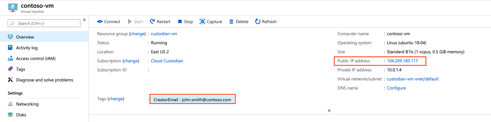

Email - Use Azure Logic Apps to notify users of policy violations¶
Azure Logic Apps are a great option to create simple scalable workflows in Azure such as sending an email or posting to Microsoft Teams. Logic Apps can have a Request trigger to initiate a workflow and this can be invoked with a Custodian logic-app action.
Create Azure Logic App¶
We will now walkthrough the steps to configure a Logic Apps workflow that will consist of an Request trigger and an Outlook send email action.
Create a new Azure Logic App¶
From the main Azure menu, choose Create a resource ─▶ Integration ─▶ Logic App.
Now, provide details about your logic app as shown here. After you’re done, hit Create.
Under Templates, choose Blank Logic App.
Create Request trigger¶
Under Built-in, select Request
Now select When a HTTP request is received and the first connect is complete.
A URL will be generated when you save that will allow you to invoke the Logic App.
Create the Outlook Send Email action¶
Click the + New Step to create an action to send an email.
In the search box, search for Send an email (V2) and select under Actions the Office 365 Outlook action.
Sign into an Office 365 account to create a connection for your Logic App. This will be the account will send emails from when the workflow is invoked.
Next, we need to customize the email template that gets sent. Go to into the Code View mode by hitting the Code View Button.
Replace the actions section with the following:
"actions": {
"Send_an_email_(V2)": {
"inputs": {
"body": {
"Body": "<p><span style=\"font-size: 16px\"><strong>Policy Name: </strong></span>@{triggerBody()['PolicyName']}<br>\n<span style=\"font-size: 16px\"><strong>Policy Description:</strong></span><strong> </strong>@{triggerBody()['PolicyDescription']}<br>\n<strong><br>\n</strong><span style=\"font-size: 16px\"><strong>Resource</strong></span><strong><br>\n--------------<br>\nName: </strong>@{triggerBody()['Resource']['Name']}<br>\n<strong>Location: </strong>@{triggerBody()['Resource']['Location']}<br>\n<strong>Owner: </strong>@{triggerBody()['Resource']['Owner']}<br>\n<strong>VmSize: </strong>@{triggerBody()['Resource']['VmSize']}<br>\n<br>\n</p>",
"Subject": "Cloud Custodian Policy: @{triggerBody()['PolicyName']}",
"To": "@{triggerBody()['Resource']['Owner']}"
},
"host": {
"connection": {
"name": "@parameters('$connections')['office365']['connectionId']"
}
},
"method": "post",
"path": "/v2/Mail"
},
"runAfter": {},
"type": "ApiConnection"
}
}
Return back to the Designer mode, and you should see the template in the Send an email (V2) action.
Finally, save the workflow.
Author Cloud Custodian policy¶
Now that we have a Logic App workflow that can send an email with our Office 365 account, we need a policy we want to be notified about. Let’s start with the Find Virtual Machines with Public IP address policy. This Custodian policy will find all Azure Virtual Machines that have public IPs attached to them.
policies:
- name: find-vms-with-public-ips
description: |
VMs should not have public-ips attached to them.
resource: azure.vm
filters:
- type: network-interface
key: properties.ipConfigurations[].properties.publicIPAddress.id
value: not-null
Add Logic App action¶
Now, we will add a logic-app action to our policy to invoke our newly created Logic App. This action leverages tags that the resource has been auto-tagged with the following auto-tag-user policy.
- type: logic-app
resource-group: cloud-custodian ─▶ This is the resource group where you created your Logic App
logic-app-name: custodian-notifications ─▶ This is the name of your Logic App
batch: false ─▶ We want to invoke the logic app for each resource that violates our policy
body: > ─▶ We will select specific properties of our resource that can be used in our Logic App
{
PolicyName: policy.name,
PolicyDescription: policy.description,
Resource: resource.
{
Name: name,
Location: location,
Owner: tags.CreatorEmail, ─▶ The CreatorEmail tag on the resource will be recipient of the email.
VmSize: properties.hardwareProfile.vmSize
}
}
Final updated policy¶
policies:
- name: find-vms-with-public-ips
description: |
VMs should not have public-ips attached to them.
resource: azure.vm
filters:
- type: network-interface
key: properties.ipConfigurations[].properties.publicIPAddress.id
value: not-null
actions:
- type: logic-app
resource-group: cloud-custodian
logic-app-name: custodian-notifications
batch: false
body: >
{
PolicyName: policy.name,
PolicyDescription: policy.description,
Resource: resource.
{
Name: name,
Location: location,
Owner: tags.CreatorEmail,
VmSize: properties.hardwareProfile.vmSize
}
}
Test the policy¶
Policy violating virtual machine¶
Notice that the Virtual Machine has the an CreatorEmail tag; this is from executing the following auto-tag-user policy against our subscription Virtual Machine resources. In addition, the Virtiual Machine has a Public Ip Address, which is a violation of our policy.
Email sent from logic app¶
This is an example email that will be sent when Custodian is ran and the Logic App is invoked.